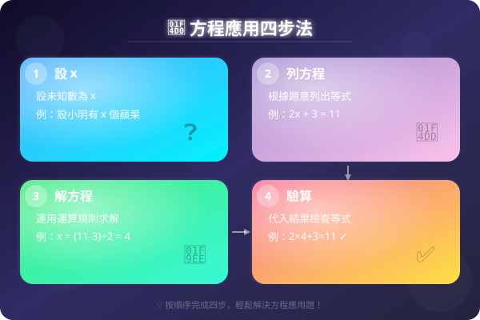

| # | 題目 | 答案 | 類型 |
|---|---|---|---|
| 1 | 解方程：x + 18 = 45 | ___ | manual |
| 2 | 解方程：x − 23 = 17 | ___ | manual |
| 3 | 解方程：6x = 54 | ___ | manual |
| 4 | 解方程：x ÷ 8 = 12 | ___ | manual |
| 5 | 用代數式表示：「一個數的 4 倍加 7」和「A 比 B 多 5」（設 A = B + ?） | ___ | manual |
| 例1 | 小明有一些糖果，吃了 9 粒後剩下 16 粒。原有多少粒？ | ___ | manual |
| 例2 | 一打雞蛋共有 12 隻。如果買了 x 打，共有 60 隻。求 x。 | ___ | manual |
| 6 | 5 盒相同的朱古力共售 $85。後來加價每盒多 $3。加價後每盒售多少元？（設原價每盒 $x） | ___ | manual |
| 7 | 小明今年 n 歲。5 年後，他年齡的 3 倍是 48。求 n。 | ___ | manual |
| 8 | 一個數的 5 倍加 12 等於 47。求這個數。 | ___ | manual |
| 9 | 妹妹有貼紙，給了朋友一半後，再多給 3 張，最後剩下 7 張。妹妹原有多少張？（設原有 x 張 → x2 − 3 = 7） | ___ | manual |
| 10 | 一個長方形，長是闊的 2 倍多 3 cm。如果闊是 w cm，長是 17 cm。求 w。 | ___ | manual |
| 11 | 中文書比英文書多 18 本。中文書有 52 本，英文書有多少本？（設英文書有 x 本） | ___ | manual |
| 12 | A 是 B 的 4 倍。A 和 B 共有 75。求 A 和 B 各是多少。 | ___ | manual |
| 13 | 一盒糖有 x 粒。吃了 14 粒後剩下 26 粒。原有多少粒？ | ___ | manual |
| 14 | 8 個相同的橙共重 2.4 kg。每個橙重多少 kg？（設每個重 x kg） | ___ | manual |
| 15 | 爸爸今年 42 歲，比媽媽大 3 歲。媽媽今年多少歲？（設媽媽 y 歲） | ___ | manual |
| 16 | 一個數的 7 倍是 91。求這個數。 | ___ | manual |
| 17 | 小明有 $x，用了 $28 後剩下 $35。他原有多少元？ | ___ | manual |
| 18 | 一個數的 3 倍加 14 等於 50。求這個數。 | ___ | manual |
| 19 | 買了 5 個同樣的書包，付 $500 找回 $75。每個書包多少元？ | ___ | manual |
| 20 | 甲和乙共有 $280。甲是乙的 3 倍。求兩人各有多少元。 | ___ | manual |
| 21 | 一個數加 8 後再乘以 3，結果是 54。求這個數。（設該數為 x → 3(x+8) = 54） | ___ | manual |
| 22 | 弟弟的年齡是哥哥的 12 少 2 歲。如果哥哥 16 歲，弟弟多少歲？如果弟弟 5 歲，哥哥多少歲？（列方程解第二問） | ___ | manual |
| 23 | 三個連續數之和是 84。求這三個數。（設最小的為 x） | ___ | manual |
| 24 | 一瓶汽水原有一些。喝了一半後，再倒入 200 mL，現在有 650 mL。原有多少 mL？（列兩步方程） | ___ | manual |
| 25 | 把一條繩子剪成兩段。長的一段是短的 3 倍多 2 m。如果全長 26 m，求兩段各長多少 m。 | ___ | manual |
| 26 | 一本書的頁碼，第一天看了 13，第二天看了餘下的 12，還剩下 40 頁未看。全書共有多少頁？（設全書 x 頁） | ___ | manual |
| 27 | A 和 B 共有 $450。A 用了 $50 後，A 剩下的錢是 B 的 3 倍。求 A 和 B 原有多少元。（設 B 有 $x） | ___ | manual |
| 28 | 正方形邊長為 s cm。周界是 36 cm。求 s。 | ___ | manual |
| 29 | 長方形闊是 5 cm，長是闊的 2 倍。求周界。（不需要方程也能解，但試用方程：設闊 = w） | 14 cm | auto |
| 30 | 長方形長是闊的 3 倍。周界是 64 cm。求長和闊。 | ___ | manual |
| 31 | 長方形長比闊多 4 cm。周界是 40 cm。求長和闊。 | ___ | manual |
| 32 | 三角形三邊之和是 30 cm。第二邊是第一邊的 2 倍，第三邊比第一邊多 3 cm。求三邊各長多少。 | ___ | manual |
| 33 | 長方形長是 12 cm，闊是 y cm。(a) 用代數式表示周界和面積。(b) 如果周界是 40 cm，求 y。(c) 用 y 的值求面積。 | 480 cm² | auto |
| 34 | 梯形上底是 a cm，下底是上底的 2 倍，高是 5 cm。面積是 45 cm²。（梯形面積 = (上底+下底)×高÷2）求上底 a。 | ___ | manual |
| 35 | 一個長方形花園，長是闊的 2 倍多 5 m。如果周界是 70 m，求花園的長、闊和面積。 | ___ | manual |
| 🏔️1 | 甲、乙、丙三人共有 $540。乙是甲的 2 倍，丙是乙的 3 倍。求三人各有多少元。（設甲有 $x） | ___ | manual |
| 🏔️2 | 長方形長是闊的 2 倍。如果長和闊各增加 3 cm，面積就增加了 57 cm²。求原來的長和闊。（設原闊 = x cm） | 6 cm² | auto |
| 🏔️3 | 一個兩位數，十位數是 3，個位數是 x。(a) 用代數式表示這個數。(b) 如果把十位和個位對調，新數是多少？(c) 如果新數比原數大 27，求 x。 | ___ | manual |
| H1 | 小美有 x 元，買書用了 $45 後剩下 $38。她原有多少元？ | ___ | manual |
| H2 | 一個數的 9 倍是 108。求這個數。 | ___ | manual |
| H3 | 一個數的 3 倍加 11 等於 47。求這個數。 | ___ | manual |
| H4 | 甲和乙共有 $156。甲是乙的 5 倍。求兩人各有多少元。 | ___ | manual |
| H5 | 長方形長是闊的 3 倍。周界是 56 cm。求長和闊。 | ___ | manual |
| H6 | 中文書和英文書共有 88 本。中文書比英文書多 12 本。兩種書各有多少本？（設英文書 x 本） | ___ | manual |
| H7 | 三角形三邊之和是 45 cm。第二邊是第一邊的 2 倍，第三邊比第二邊少 5 cm。求三邊各長多少。 | ___ | manual |
| H8 | 五年後，爸爸的年齡是兒子的 3 倍。現在爸爸 40 歲，兒子多少歲？（設兒子現在 x 歲 → 40+5 = 3(x+5)） | 45 | auto |
霖楓學苑 · LF Academy · 自動答案生成器 v1.0 · 手動題目請老師覆核